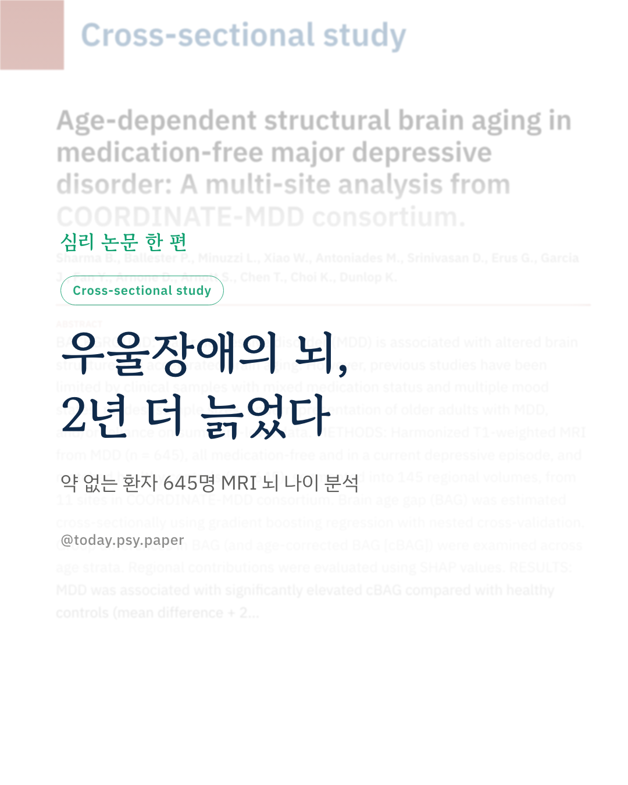
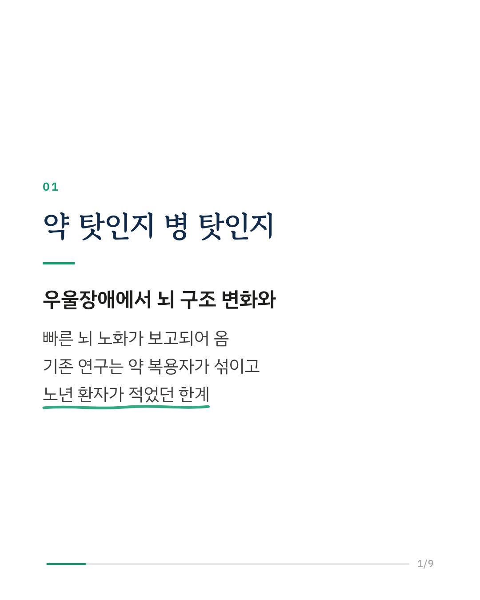
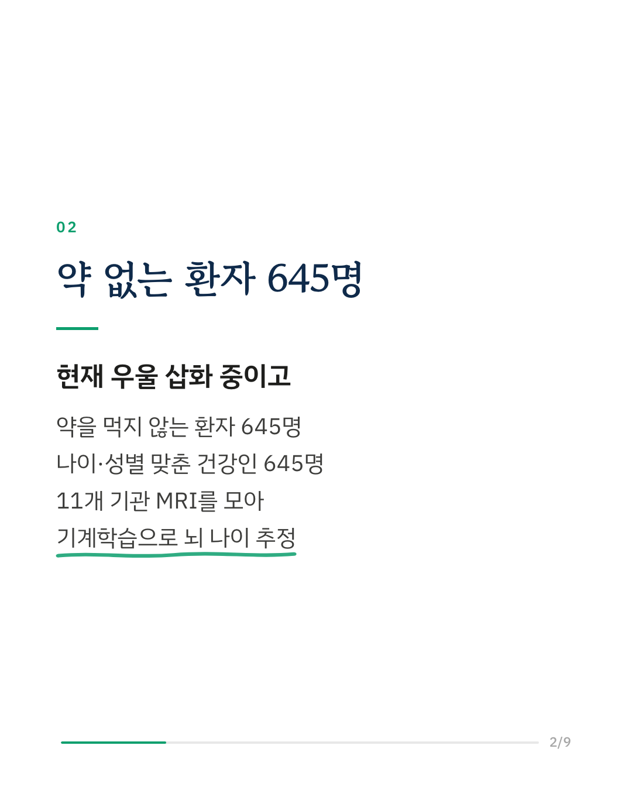
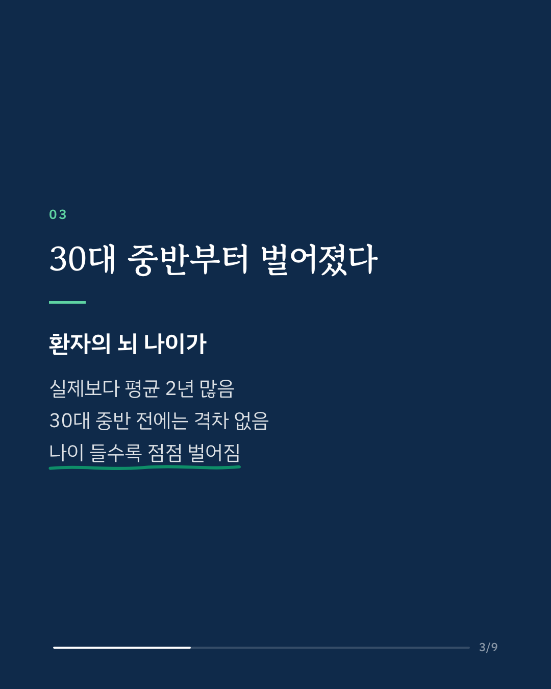
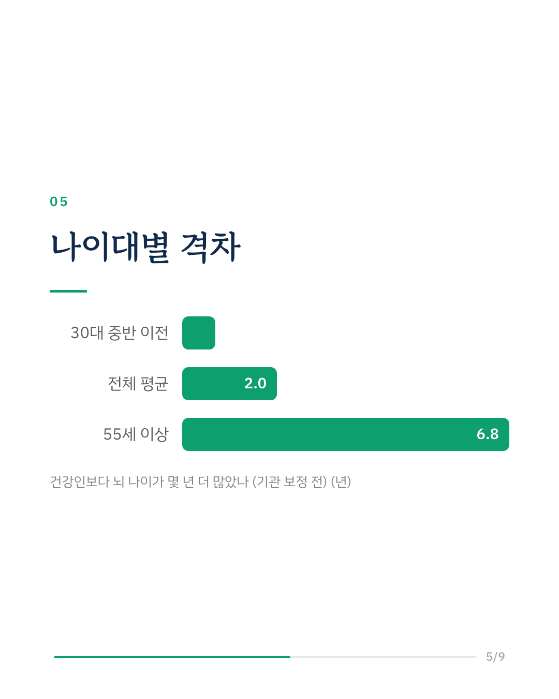
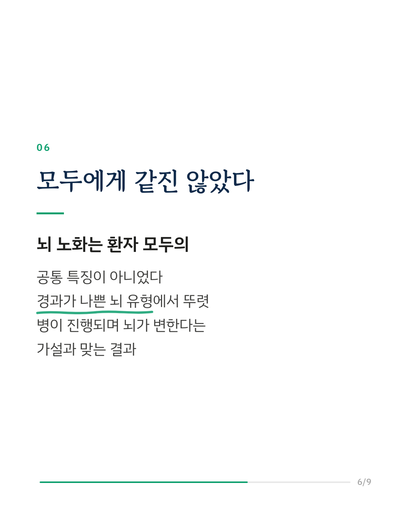
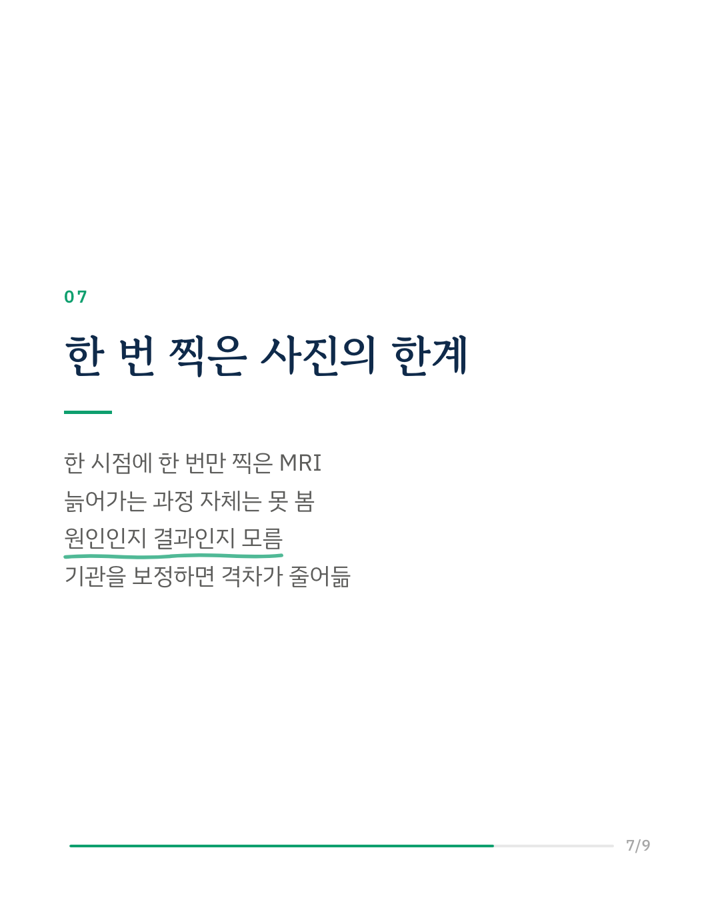
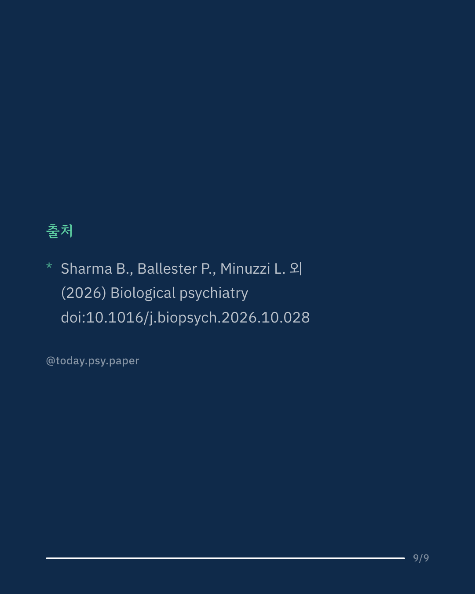

우울증이 있으면 뇌가 더 빨리 늙는다는 보고는 전부터 있었습니다. 다만 지금까지의 뇌 나이 연구는 약을 먹는 사람과 안 먹는 사람이 섞여 있었고, 나이 든 환자는 적었습니다. 이번 연구는 11개 기관의 MRI 자료를 모아, 약을 먹지 않고 현재 우울 삽화 중인 환자 645명과 나이·성별을 맞춘 건강한 사람 645명의 '뇌 나이'를 기계학습으로 추정해 비교했습니다. 환자의 뇌 나이는 실제 나이보다 평균 2년 많았습니다. 효과 크기는 작은 편이었지만, 나이대마다 결과가 같지 않았습니다. 30대 중반 이전에는 격차가 없었고, 그 뒤로 점점 벌어져 55세 이상에서는 6.8년(기관 보정 후 4.3년)에 이르렀습니다. 격차는 이 자료에서 앞서 확인된 뇌 구조 유형 가운데 임상 경과가 나쁜 유형에서 더 두드러졌습니다. 뇌 나이 추정에는 전전두엽, 중간측두이랑, 조가비핵, 소뇌 등의 부피가 많이 기여했습니다. 연구진은 뇌 노화가 우울증 환자 모두의 특징이 아니라 특정 취약 집단에서 더 강하게 나타난다고 말합니다. 병이 길어질수록 뇌가 변한다는 신경진행 모형과 맞는 결과이지만, 한 시점의 MRI만 비교한 횡단 연구라서 뇌가 실제로 더 빨리 늙어가는 과정을 보여 준 것은 아닙니다. Biological Psychiatry (2026), 'Age-dependent structural brain aging in medication-free major depressive disorder: A multi-site analysis from COORDINATE-MDD consortium' DOI: 10.1016/j.biopsych.2026.10.028 #임상심리 #정신건강정보 #심리학연구 #논문리뷰 #우울증 #주요우울장애 #뇌과학 #뇌영상
python3 publish.py 42977017